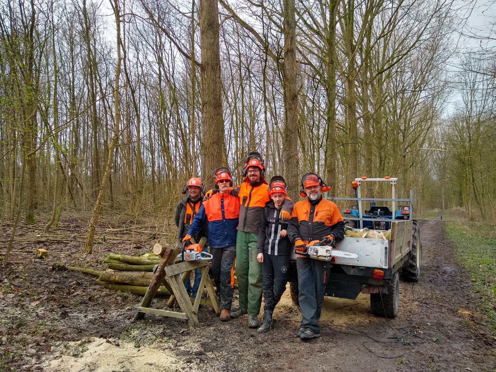

Over ons
WerXaam is een groen leer/werkbedrijf met 3 hoofdactiviteiten
Het kappen van bomen in het bos en het verwerken van de stammen tot haardhout. Hovenierswerxaamheden in diverse tuinen en plantsoenen. Begeleiding aan deelnemers met een afstand tot de arbeidsmarkt.
Alle werxaamheden vinden plaats in de buitenlucht of in de ruime loods. Daardoor zijn deelnmers nauw betrokken bij weer en wind en de veranderingen van de seizoenen. Taken worden afgestemd op interesse en vaardigheden van de deelnemer. Daar waar mogelijk worden aanpassingen getroffen. Voor de koffie,thee en lunch is er een aangename verblijfsruimte.
Werxaam biedt deelnemers de mogelijkheid om ontwikkelingsgericht deel te nemen aan het agrarisch werkproces en het buitenleven. De begeleiding is gericht op het ondersteunen en ontwikkelen van arbeidsvaardigheden. Door de directe betrokkenheid bij de bedrijfsactiviteiten, de natuurlijke omgeving en samenwerking met collega’s kan je hier een prettige werkplek vinden.
Aanmelding
Mensen met een beschikking kunnen 2 of meerdere dagdelen per week bij werXaam komen werken. Geïnteresseerden kunnen vrijblijvend contact opnemen voor een bezoek of informatie met Jos van Egmond.